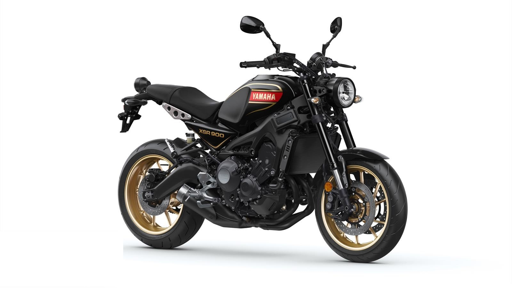
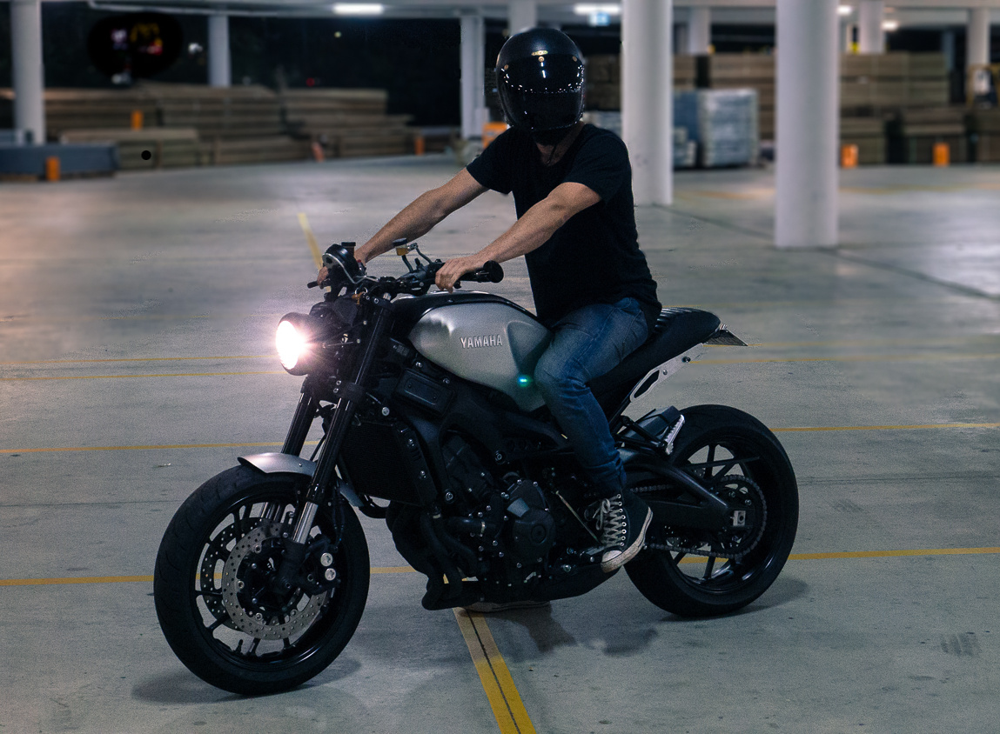

La Yamaha XSR900 llega equipada con un motor tricilíndrico de 889 cc refrigerado por agua que ofrece una potencia de 119 CV a 10.000 rpm. Con esta potencia ofrece una excelente aceleración desde bajos como pudimos comprobar durante la prueba que os dejamos más abajo.
Además la Yamaha XSR900 incorpora de serie embrague asistido antirrebote (A&S) que permite controlar el par máximo de 93 Nm a 7.000 rpm. El chasis de la Yamaha XSR900 es un de las características clave de la nueva XSR900, compacto, ligero y fabricado completamente de aluminio con los procesos más avanzados lo convierten en uno de los diseños más estilizados de su clase.

